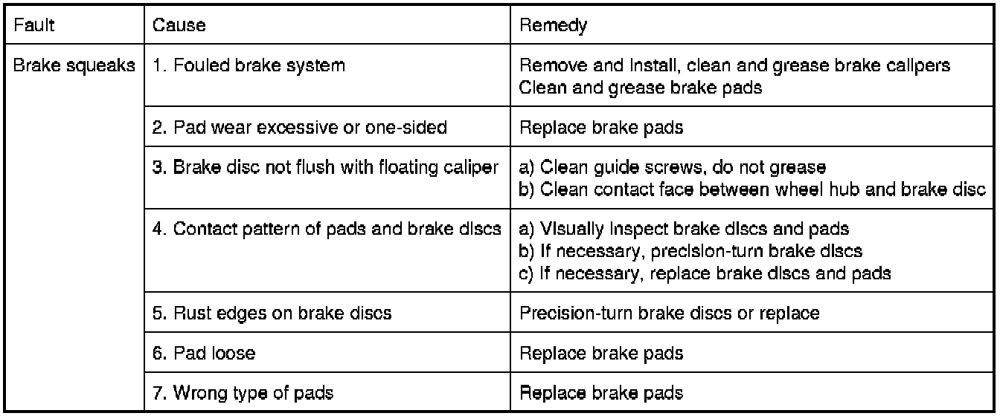
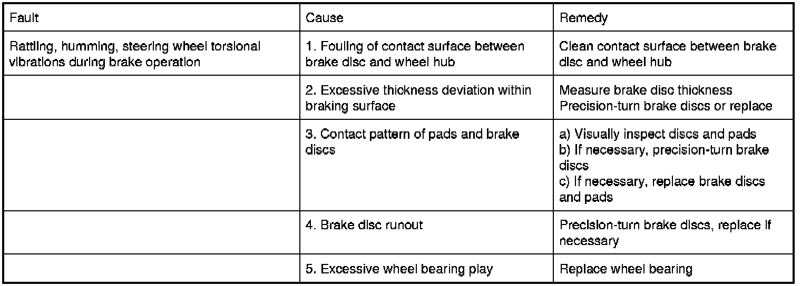

Operation CHARM
: Car repair manuals for everyone.
Home
>>
BMW
>>
2007
>>
X3 3.0si (E83) L6-3.0L (N52K)
>>
Repair and Diagnosis
>>
Brakes and Traction Control
>>
Testing and Inspection
>>
Symptom Related Diagnostic Procedures
Symptom Related Diagnostic Procedures
34 90 Troubleshooting Brake System

